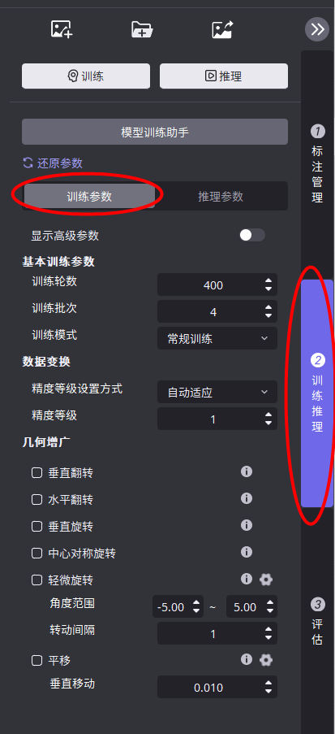
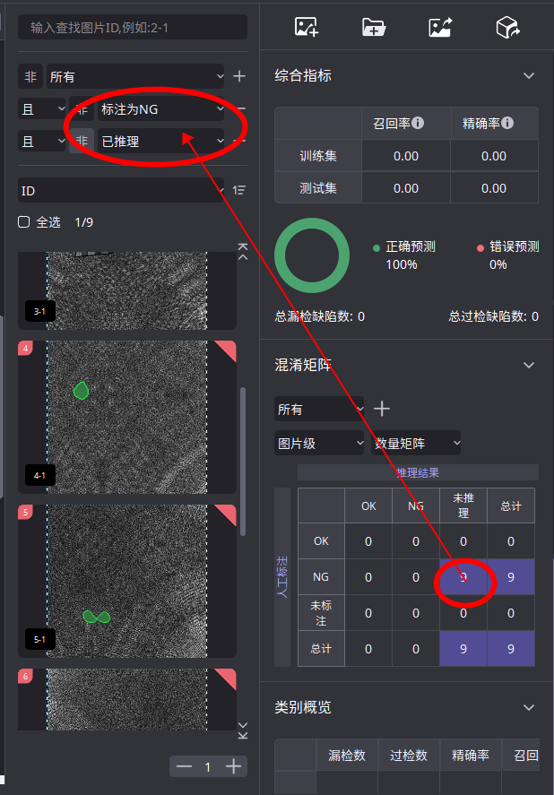
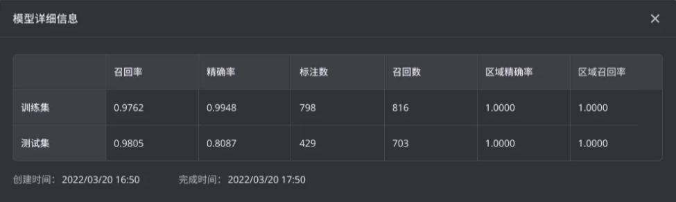
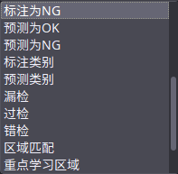

软件介绍
功能布局
术语概念
● 数据集：
○ 训练集：参与训练的数据集
○ 测试集：参与模型自动评价的数据集
○ 未标注：可用于人工模型评价
● 视图：
○ 视图：基于原始图像的矩形框（ROI），框内图像称为视图
○ 视图变换：视图框的变换设置
○ 视图掩模：绘制干扰区域，干扰区域将被置黑，不参与训练
○ 视图过滤：通过过滤设置，保留需要的视图
● OK图与NG图：
○ OK图：良品图
○ NG图：缺陷图
● 指标：
○ 漏检率 = 未检出NG数量 / NG总数
○ 过检率 = OK判为NG数量 / OK总数
○ 精确率 = 检测为NG的NG数量 / 检测为NG数量
○ 召回率 = 检测为NG的NG数量 / NG总数
○ 准确率 = 正确分类数量 / 总数
○ 混淆矩阵：混淆矩阵是一种常用的模型评估工具，纵向是人工标注、横向是推理结果。混淆矩阵可以直观地了解模型在哪一类样本里面表现不佳，与其他哪些类别容易混淆。
● Tag： ○ 图像Tag：用于标识图像，可以标识图像的属性（批次、采集时间、何种缺陷等）； ○ 视图Tag：视图的标记，可以标识视图的特征
● 基础操作： ○ 标注：在图片中绘制缺陷区域。 ○ 标签：缺陷的类别。 ○ 不学习区域/掩膜：不希望模型关注的区域。 ○ 重点学习区域：希望模型重点关注的区域。
工程管理
（1）入口
（2）创建工作区 用户可以选择加载本地目录或者选择在已有工作区下新建子工作区
（3）创建工程
选择所需工程类型，并输入工程名称
（4）工作区支持的操作
1.工作区重命名 2.工作区另存为 3.新建工程 4.工程列表 5.打开全部工程 6.查看工作区信息 7.删除工作区
（5）工程支持的操作
1.缩略图 2.工程重命名 3.工程信息 4.备注信息编辑 5.删除工程 6.打开工程
工程管理示范使用方法
图像操作
导入图像
（1）以图像为单位导入
（2）以文件夹为单位导入
数据导出
如果是导出算法模块的图像，导出的步骤如下： 1.首先在图像列表中选择对应图像 2.点击当前模块图像IO区中的导出按钮或者图像列表右键选择“导出选中图像/标注”
3.选择导出原图/标注，也可以选择导出渲染图
4.如果选择导出原图/标注，可以在原图和标注中进行复选（可以自由选择只导出标注/原图或者全部导出） 5.选择想要的导出路径，点击确定即可完成数据导出 6.在指定路径下可以看到本次存储的数据包文件
数据导入

1.点击主界面右上角导入图像 2.选择3.0导出的数据包文件

3.进入数据包面板
4.可以根据图像Tag进行进一步的数据筛选，Tag筛选之间的连接条件为且，最多添加3个
5.可以复选原图和标注，可以复选图像 6.点击确定即可 另外，如果当前模块已经有图像，导入数据包是可以只选择与已有图像对应的标注，可以实现自动对应
不同模块之间标注互相支持：
分割和检测的标注互相支持
分割和非监督分割的标注互相支持
OCR和检测的标注互相支持
检测和定位（装配检查）的标注互相支持
兼容旧版本标注
兼容说明
2.3、2.4版本的标注可以导入3.2中使用（兼容aqlabel文件）
操作步骤
2.X首模块标注导入3.0 (1) 要准备的数据：2.X首模块source文件夹和label文件夹，且这两个文件夹需要放在同级目录下 (2) 3.0中新建工程 (3) 在输入节点后面增加对应的首模块 (4) 在首模块中点击添加图像，选择source里的图像，点击添加 (5) 进入当前模块的视图转换器中，点击应用。即可看到保留的标注
第三方标注导入
分割模块： ● 支持Labelme：json格式标注文件 检测模块： ● 支持Labelme：json格式标注文件 ● 支持Labelimage：xml、json格式标注文件
图像列表功能
（1）右键功能：
添加工具
（1）点击添加按钮
（2）进入添加模块界面
1.点击可以添加对应的模块 2.单击模块，可以查看介绍信息 （3）并联模块 在模块后面继续添加其他工具，即可完成模块并联
（4）串联模块 在模块后面继续添加模块，即可完成模块串联
数据标注
画笔工具
多边形绘制工具：
多边形绘制工具分别为：圆形笔、方形笔、圆线形笔、方线形笔、钢笔、铅笔、两点画圆工具、魔棒工具、快速标注工具。
（1）圆形笔和方形笔：圆形画笔工具，直径为画笔大小。方形画笔工具，边长为画笔大小。键盘A键画笔增大，D键画笔缩小。

（2）圆线形笔和方形线笔：圆线形笔工具，鼠标左键设定起点后，可以连续左键点击画出多段直线标注，双击鼠标左键结束标注。直径为画笔大小。方形线笔笔形为方形，鼠标左键设定起点后，可以连续左键点击画出多段直线标注，双击鼠标左键结束标注。线宽为画笔大小。

（3）钢笔填充鼠标左键设定起点后，连续左键点击画出多段线段轮廓，双击鼠标左键封闭轮廓，轮廓围成的区域自动填充为标注，不受画笔大小影响，使用时应避免轮廓线段交叉。 铅笔填充长按鼠标左键，绘制标注轮廓，松开鼠标左键自动填充为标注，不受画笔大小影响，使用时应避免轮廓线段交叉。

（4）两点画圆：鼠标左键设定起点后，拖动鼠标绘制圆形，双击鼠标左键封闭轮廓，轮廓围成的区域自动填充为标注，不受画笔大小影响。

（5）魔棒：对于一些分界线比较明显的图像，通过魔棒工具可以很快速的将图像抠出，魔棒的作用是可以知道你点击的位置的颜色，并自动获取附近区域相同的颜色，使它们处于选择状态。不受画笔大小影响。并且你可以设置魔棒的生效范围（ROI）。另外，还可以选择在使用魔棒工具时是否填孔空洞

（6）快速标注：通过增加工具笔添加区域和删除工具笔删除区域来完成区域的选取,增加工具笔圈住区域则该区域被选中，删除工具笔在已选中区域进行标注，未被删除笔圈住的区域则不再被选中，完成绘制后点击应用，标注完成。不受画笔大小影响。*缺陷边界与产品背景有一定对比度时推荐使用，细条形的缺陷，小于3个像素建议使用其他工具。

（7）智能标注：对象边界清晰、对比度较高的缺陷，智能标注能够快速识别并勾勒出这些缺陷的轮廓。并且有效提高标注效率。首次使用会出现加载弹窗，提示需要4-5分钟执行初始化（具体耗时会根据显卡计算能力有所变化）。首先使用选中笔标注目标区域，然后使用删除笔删除多余目标区域。
（8）橡皮擦：
圆形橡皮擦直径为画笔大小，用于擦除标注。 方形橡皮擦边长为画笔大小，用于擦除标注。 线性橡皮擦笔形为圆形，鼠标左键设定起点后，可以连续左键点击画出多段直线标注，双击鼠标左键结束标注，线宽为画笔大小，用于擦除标注。 *橡皮擦可以选择橡皮擦的形状和要擦除的缺陷类型。
（9）画笔大小：显示画笔大小，单位为像素。键盘“A”键放大画笔，“D”键缩小画笔。 （10）反选：点击反选，原有缺陷标注区域与没有缺陷标注区域相互转换。 （11）标注腐蚀膨胀： ① 选择想要进行腐蚀膨胀的标注类别 ② 填入膨胀或者腐蚀的具体像素值，点击确定即可
矩形绘制工具：
【应用场景：检测工具】
自由框：单击后斜拉画出任意矩形框标注。弹出标签框后选择标签名称，标注完成。
标准框：点击直接放置固定大小的矩形框标注，可以调整矩形框的宽、高。弹出标签框后选择标签名称，标注完成。 *目标大小固定时推荐使用标准模式进行标注
单点绘制工具：
【应用场景：定位工具】
精确点定位工具：在图片精确标注出带类别标签的定位特征点，需要进行精确标注。 *标注点由之前的圆形改为了方形，扩展了使用用场景。另外，方形标注同样适用于圆形目标，可以正常检出。 *使用单点定位时，建议使用复制（ctrl+C）粘贴（ctrl+V），进行快速标注。
快速标注工具： （1）首先画一条与目标的高或者宽平行的线段

（2）然后鼠标左键按住绘制

属性系统：
（1）设置标注&推理结果颜色属性唯一，不能重复设置同种颜色属性，已经选择的颜色不能再选择。 （2）设置绘制过程的颜色属性。 （3）设置边线的宽度。
标注模式
缺陷标注模式
缺陷标注：用于标识缺陷特征或者提取产品位置 在此模式下，可以对图像视图内的区域进行标注
重点学习区域绘制模式
【仅分割工具有此功能】 重点学习区域：希望模型重点关注的区域 在此模式下，可以对图像视图内的区域进行重点学习区域的绘制
不学习区域绘制模式
不学习区域：不希望模型关注的区域 在此模式下，可以对图像视图内的区域进行不学习区域的绘制
标签管理
标注筛选
筛选项有：类别、类别属性、集合、位置、宽度、高度、角度、面积等 标注筛选结果与画布可对应：单击某一行可直接跳转对应图像的对应标注
标注分布
当查看的分布类型为类别时：
当查看的分布类型为位置时：
当查看的分布类型为宽度/高度/角度等时：

Tag管理
Tag类型：图像Tag、视图Tag 图像Tag：用于标识图像，可以标识图像的属性（批次、采集时间、何种缺陷等）； 视图Tag：视图的标记，可以标识视图的特征
设置Tag 入口：图像列表右键、快捷键直接对图像设置Tag、
点击之后出现设置模块Tag窗口，可以集中对所选图像进行Tag的增删改操作
点击图像信息中的Tag标识中的删除按钮，可以快速删除当前图像的对应视图Tag或者图像Tag
视图操作
视图转换是什么？ 用来根据上一模块的检测结果选取当前模块有效图像范围。这个范围内的图像区域就是视图
视图过滤
入口：
视图默认保留所有NG种类，用户可以手动选择保留指定类别的缺陷作为视图来源，也可以选择OK图作为视图来源 选中代表保留视图，取消勾选代表不保留视图

视图变换
（1）可以绘制新的视图
（2）可以修改已生成视图的大小、位置、角度、腐蚀膨胀。推荐手动拖动视图框来快速编辑
（3）可以删除已有视图
（4）视图可以划分、合并
可以定义划分的横向纵向数量以及划分间隔，点击划分生效，支持撤回和重做
按住键盘ctrl依次单击可以多选视图，右键选择合并即可执行视图合并操作 其他： 参数初始化
撤回、重做
当前视图变换标识
视图掩膜
（1）自动生成：点击之后，会自动将上一模块的检出结果作为掩膜。同样支持反选，可以把除了检出区域之外的区域作为掩膜
（2）手动绘制：支持手动框定新的视图区域
视图转换-图像列表筛选
支持的筛选项： 按照图像名称搜索 按照图像Tag搜索
添加训练集
自动划分（模型训练助手）
入口：
模型训练助手主界面： 共分为两个功能板块：数据划分和训练集推荐。
数据划分
比例划分：所有的已标注数据按照指定的比例划分训练集和测试集 数量划分：所有的已标注数据按照指定的数量划分训练集和测试集
训练集推荐
根据现有基础模型，自动挑选训练推荐的数据。建议训练基础模型时：训练集/全集>=5%，涵盖各类型缺陷。挑选比例=挑选数量/全集，建议取5%
注意事项：只要当前模型发生变化（切换模型，再训练等），所有训练推荐集将被清空
手动划分：
在图像列表中选中图像右键，可以加入/移出训练集。支持多选。
训练
训练调参

执行训练

推理
推理调参
执行推理
评估结果
入口：
综合指标
训练集精确率：训练集中的TP/(TP+FP)
训练集召回率：训练集中的TP/(TP+FN)
测试集精确率：测试集中的TP/(TP+FP)
测试集召回率：测试集中的TP/(TP+FN)
精确率：精确率越高，区域级过检越少；精确率是相对于预测结果而言的，它表示的是预测为正的样本（缺陷样本）中有多少是对的，因此精确率即：P=TP/(TP+FP)
召回率：召回率越高，区域级漏检越少；召回率是相对于样本而言的，即样本中有多少正样本（缺陷样本）被预测正确了，这样的有TP个，所有的正样本有两个去向，一个是被判为正的，另一个是错判为负的，因此总共有TP+FN个，所以，召回率 R= TP / (TP+FN)
正确预测：图像级正确预测图像占全部参与评估的图像的比例，鼠标点击可以跳转到对应的图像范围。
错误预测：图像级错误预测图像占全部参与评估的图像的比例，鼠标点击可以跳转到对应的图像范围。
总漏检缺陷数：漏检缺陷的个数（区域级），鼠标点击可以跳转到对应的图像范围。
总过检缺陷数：过检缺陷的个数（区域级），鼠标点击可以跳转到对应的图像范围。
混淆矩阵
混淆矩阵是一种常用的模型评估工具，纵向是人工标注、横向是推理结果。混淆矩阵可以直观地了解模型在哪一类样本里面表现不佳，与其他哪些类别容易混淆。 使用规则： （1）首先筛选数据集范围：
所有：所有图片的混淆矩阵。
名称检索：只显示根据图像存储名称进行过滤后图片的混淆矩阵。
视图Tag检索：只显示根据视图Tag进行过滤后图片的混淆矩阵。
图像Tag检索：只显示根据图像Tag进行过滤后图片的混淆矩阵
训练集：只显示训练集的混淆矩阵。
测试集：只显示测试集的混淆矩阵。
（2）选择数据集之后，可以选择查看图片级矩阵还是区域级矩阵：
图片级是以整张图像定性的结果。
区域级是以每张图的区域定性的结果。

（3）继而可以选择查看数量矩阵还是概率矩阵
数量矩阵是按照个数进行统计的结果。
概率矩阵是按照比例进行统计的结果。
（4）在筛选到想看的结果之后，可以点击矩阵中的任意一格，图像列表会根据筛选规则自动跳转对应的图像。可以核查每一张图像的结果，从而有针对性的继续优化模型。

类别概览
提供了：每个缺陷类别的：漏检数（漏检的缺陷个数）、过检数（过检的缺陷个数）、精确率（该类别的TP/(TP+FP)）、召回率（该类别的TP/(TP+FN)）
模型详情
提供了三组模型耗时信息，分别是总耗时、单图测试耗时（平均值+最大值）、单轮迭代耗时（平均值+最大值）
训练过程曲线
在训练过程中，用户可以观察损失曲线，用以帮助观察训练过程的进展情况。
更多
模型的详细信息，包含：训练集、测试集分别的召回率、精确率、标注数、召回数、区域精确率、区域召回率

区域精确率：以缺陷区域为单位计算的精确率
区域召回率：以缺陷区域为单位计算的召回率
图像筛选
筛选
筛选条件支持：

筛选条件支持与、或、非连接

一键重置：点击列表顶部的重置按钮，可以快速回到初始状态
排序
列表右键菜单

菜单栏
文件
新建工程：在当前工作区下新建工程
最近打开工程：最近打开的工程
关闭当前工程：关闭当前在主页面上的工程
关闭所有工程：关闭当前打开的所有工程
删除当前工程：删除当前在主页面上的工程，需要谨慎操作

版本
保存当前为版本：保存当前工程的当前状态为版本
回退至最近版本：回退至当前工程曾经保存过的版本
管理已有版本：管理当前工程的所有版本
工具
工厂模式：进入当前工程的工厂模式
综合判定工具：给当前工程增加综合判定工具。如果已经建立了综合判定工具，则需要先删除再重新新建
导出报表：给当前工程的当前模块编辑报表&导出报表
图像
导入图像：当前工程以图为单位导入图像
导入文件夹：当前工程以文件夹为单位导入图像
训练推理
训练当前模块：当前工程当前模块加入训练/训练队列
推理当前模块：当前工程当前模块加入推理
训练任务管理：查看/管理当前训练任务
一键推理所有图像：将当前工程的所有图像按照树流程推理一遍
一键推理新增图像：将当前新增图像按照树流程推理一遍
模型
模型导出：当前工程模型导出
训练过程曲线：查看当前工程当前模块的训练过程曲线
模型耗时：查看当前工程当前模块的模型耗时信息
模型信息：查看当前工程当前模块的模型详细信息
设置
首选项：打开首选项设置
硬件选择：选择工程训练以及推理分别的最大GPU数量以及GPU优先级
判定标准函数管理：管理综合判定节点的判定标准函数
工程体积优化：清理工程临时文件，以达到大幅缩减工程体积的目的
视窗
标尺：开启/关闭标尺
辅助线：开启/关闭辅助线
坐标值：开启/关闭坐标值
图像信息：开启/关闭图像信息展示
显示高级参数：开启/关闭高级参数
启用OK/NG显示：开启/关闭画布左下角结果的展示
帮助
使用文档
开发文档
示例工程
显卡小工具
查看日志
快捷键信息
关于AIDI
版本升级工具
使用方法：
1.AIDI安装目录下找到Tools文件夹
2.找到2To3工具，并双击打开
 3.选择旧的2.4工程，以及转化后存储路径
保留的旧工程的数据范围包含以下内容：
（1）图
（2）标注
（3）数据集划分
（4）视图Tag
适用模块范围：
快检+分割
分割+分割
各单模块（除了定位、区域提取）
3.选择旧的2.4工程，以及转化后存储路径
保留的旧工程的数据范围包含以下内容：
（1）图
（2）标注
（3）数据集划分
（4）视图Tag
适用模块范围：
快检+分割
分割+分割
各单模块（除了定位、区域提取）